Adrian
AdrianAfrodyta
колготки · 20 DEN
364 ₽≈ $4.43
Цена проверена 25.11.2026
У продавца — Adrian AfrodytaМодели и цены
Выберите бренд, найдите свою модель и сравните цены. Рядом с рублями — ориентир в долларах по курсу Банка России.
По алфавиту. Число рядом — модели из каталога «Лоретты».
1565 моделей · показано 48
Adrianколготки · 20 DEN
364 ₽≈ $4.43
Цена проверена 25.11.2026
У продавца — Adrian Afrodyta Adrian
Adrianколготки
377 ₽≈ $4.59
Цена проверена 25.11.2026
У продавца — Adrian Jasmine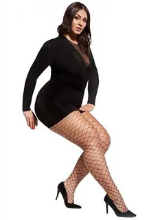
Adrianколготки
348 ₽≈ $4.24
Цена проверена 25.11.2026
У продавца — Adrian Octagon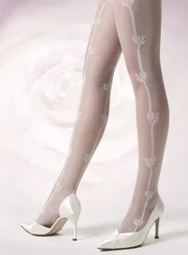
Amarколготки · 15 DEN
299 ₽≈ $3.64
Цена проверена 25.11.2026
У продавца — Amar 6725 Amoralle
Amoralleчулки · 20 DEN
8 051 ₽≈ $98.01
Цена проверена 25.11.2026
У продавца — Amoralle Coquete Paulette Amoralle
Amoralleчулки · 100 DEN
5 200 ₽≈ $63.30
Цена проверена 25.11.2026
У продавца — Amoralle Pastel dreams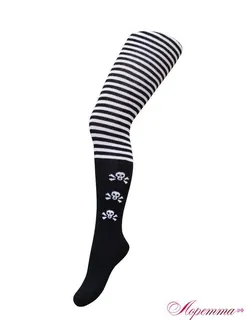
Arina-Nireyколготки
144 ₽≈ $1.75
Цена проверена 25.11.2026
У продавца — Arina-Nirey Nib 180909колготки · 10 DEN
1 479 ₽≈ $18.00
Цена проверена 25.11.2026
У продавца — Aristoc Aae4 Aristoc
Aristocчулки · 10 DEN
1 054 ₽≈ $12.83
Цена проверена 25.11.2026
У продавца — Aristoc Aae5 Aristoc
Aristocколготки · 10 DEN
1 479 ₽≈ $18.00
Цена проверена 25.11.2026
У продавца — Aristoc Aae7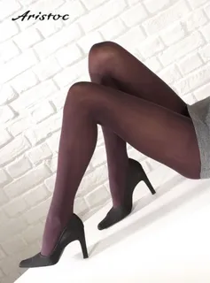
Aristocколготки · 60 DEN
Цена не указана
Проверено 25.11.2026
Нет в наличии
У продавца — Aristoc Aag6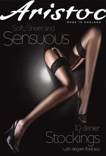
Aristocчулки · 10 DEN
1 750 ₽≈ $21.30
Цена проверена 25.11.2026
У продавца — Aristoc Aam6 Aristoc
Aristocчулки · 10 DEN
1 360 ₽≈ $16.56
Цена проверена 25.11.2026
У продавца — Aristoc Aam7 Aristoc
Aristocколготки · 10 DEN
2 584 ₽≈ $31.46
Цена проверена 25.11.2026
У продавца — Aristoc Abb8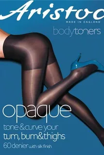
Aristocколготки · 60 DEN
2 635 ₽≈ $32.08
Цена проверена 25.11.2026
У продавца — Aristoc Aeq4 Aristoc
Aristocколготки · 15 DEN
2 159 ₽≈ $26.28
Цена проверена 25.11.2026
У продавца — Aristoc Akl3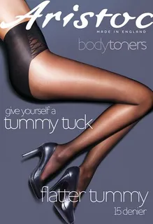
Aristocколготки · 15 DEN
Цена не указана
Проверено 25.11.2026
Нет в наличии
У продавца — Aristoc Akl5 Aristoc
Aristocчулки · 10 DEN
1 564 ₽≈ $19.04
Цена проверена 25.11.2026
У продавца — Aristoc Akw9 Aristoc
Aristocколготки · 10 DEN
1 794 ₽≈ $21.84
Цена проверена 25.11.2026
У продавца — Aristoc Aqe9 Aristoc
Aristocколготки · 60 DEN
Цена не указана
Проверено 25.11.2026
Нет в наличии
У продавца — Aristoc Aqt8 Aristoc
Aristocколготки · 20 DEN
2 095 ₽≈ $25.50
Цена проверена 25.11.2026
У продавца — Aristoc Aqx6 Aristoc
Aristocколготки · 80 DEN
1 717 ₽≈ $20.90
Цена проверена 25.11.2026
У продавца — Aristoc Asl1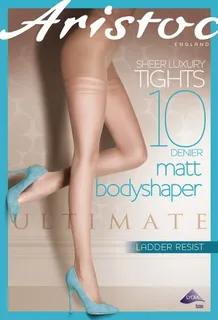
Aristocколготки · 10 DEN
2 603 ₽≈ $31.69
Цена проверена 25.11.2026
У продавца — Aristoc Asl6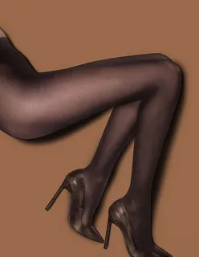
Aristocколготки · 30 DEN
1 785 ₽≈ $21.73
Цена проверена 25.11.2026
У продавца — Aristoc Asl8 Aristoc
Aristocколготки · 60 DEN
1 772 ₽≈ $21.57
Цена проверена 25.11.2026
У продавца — Aristoc Ati7 Aristoc
Aristocколготки · 30 DEN
Цена не указана
Проверено 25.11.2026
Нет в наличии
У продавца — Aristoc Atj3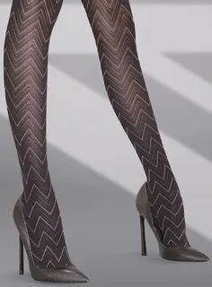
Aristocколготки · 40 DEN
833 ₽≈ $10.14
Цена проверена 25.11.2026
У продавца — Aristoc Auj4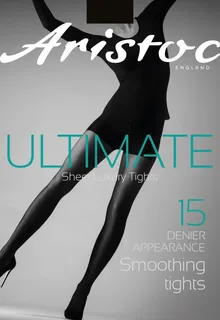
Aristocколготки · 15 DEN
1 972 ₽≈ $24.01
Цена проверена 25.11.2026
У продавца — Aristoc Avj4 Aristoc
Aristocколготки · 15 DEN
2 890 ₽≈ $35.18
Цена проверена 25.11.2026
У продавца — Aristoc Avj5 Aristoc
Aristocколготки · 10 DEN
2 686 ₽≈ $32.70
Цена проверена 25.11.2026
У продавца — Aristoc Avz1 Aristoc
Aristocчулки · 10 DEN
2 788 ₽≈ $33.94
Цена проверена 25.11.2026
У продавца — Aristoc Avz2 Aristoc
Aristocколготки · 50 DEN
2 941 ₽≈ $35.80
Цена проверена 25.11.2026
У продавца — Aristoc Avz3 Aristoc
Aristocколготки · 15 DEN
2 244 ₽≈ $27.32
Цена проверена 25.11.2026
У продавца — Aristoc Avz4 Aristoc
Aristocчулки · 15 DEN
2 924 ₽≈ $35.59
Цена проверена 25.11.2026
У продавца — Aristoc Avz5 Aristoc
Aristocколготки · 50 DEN
2 635 ₽≈ $32.08
Цена проверена 25.11.2026
У продавца — Aristoc Awe3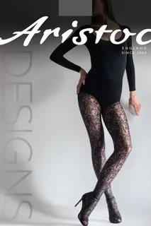
Aristocколготки · 30 DEN
833 ₽≈ $10.14
Цена проверена 25.11.2026
У продавца — Aristoc Awe4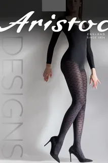
Aristocколготки · 30 DEN
833 ₽≈ $10.14
Цена проверена 25.11.2026
У продавца — Aristoc Awe5 Aristoc
Aristocколготки · 30 DEN
1 923 ₽≈ $23.41
Цена проверена 25.11.2026
У продавца — Aristoc Awe7 Aristoc
Aristocколготки · 30 DEN
2 576 ₽≈ $31.36
Цена проверена 25.11.2026
У продавца — Aristoc Awe8 Aristoc
Aristocколготки · 60 DEN
2 244 ₽≈ $27.32
Цена проверена 25.11.2026
У продавца — Aristoc Awe9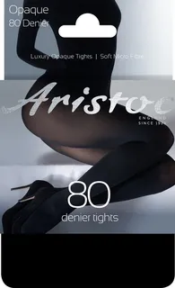
Aristocколготки · 80 DEN
2 601 ₽≈ $31.66
Цена проверена 25.11.2026
У продавца — Aristoc Awf1 Aristoc
Aristocколготки · 100 DEN
2 584 ₽≈ $31.46
Цена проверена 25.11.2026
У продавца — Aristoc Awf3 Aristoc
Aristocчулки · 10 DEN
2 329 ₽≈ $28.35
Цена проверена 25.11.2026
У продавца — Aristoc Awx5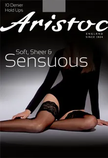
Aristocчулки · 10 DEN
2 533 ₽≈ $30.83
Цена проверена 25.11.2026
У продавца — Aristoc Awx6 Aristoc
Aristocчулки · 15 DEN
2 703 ₽≈ $32.90
Цена проверена 25.11.2026
У продавца — Aristoc Ayr5 Polka Dot Aristoc
Aristocчулки · 80 DEN
2 465 ₽≈ $30.01
Цена проверена 25.11.2026
У продавца — Aristoc Opaque 80 den Hold Upsколготки · 6 DEN
1 853 ₽≈ $22.56
Цена проверена 25.11.2026
У продавца — Aristoc Ultimate Bare Tights Aristoc
Aristocколготки · 50 DEN
2 822 ₽≈ $34.35
Цена проверена 25.11.2026
У продавца — Aristoc Ultimate Sheer Luxury 50 den Shine TightsПопробуйте другой диапазон цены или уберите один из фильтров.
Источник моделей и рублёвых цен — Лоретта ↗. У каждой модели указана дата проверки. Цены старше 48 часов отмечены как требующие обновления; окончательные цену, размер, цвет и наличие уточняйте у продавца.
Банк России ↗: 1 USD = 82,1488 ₽. Действует с 24.11.2026; проверен 24.11.2026.
Сумма в USD приблизительная: рублёвая цена разделена на курс, результат округлён до двух знаков. ТОНКО помогает сравнить модели; покупка оформляется на сайте продавца.
Здесь показаны каталожные изображения изделий. Отдельные фотографии упаковок собраны в архиве упаковок. Изображения и товарные знаки принадлежат их правообладателям.